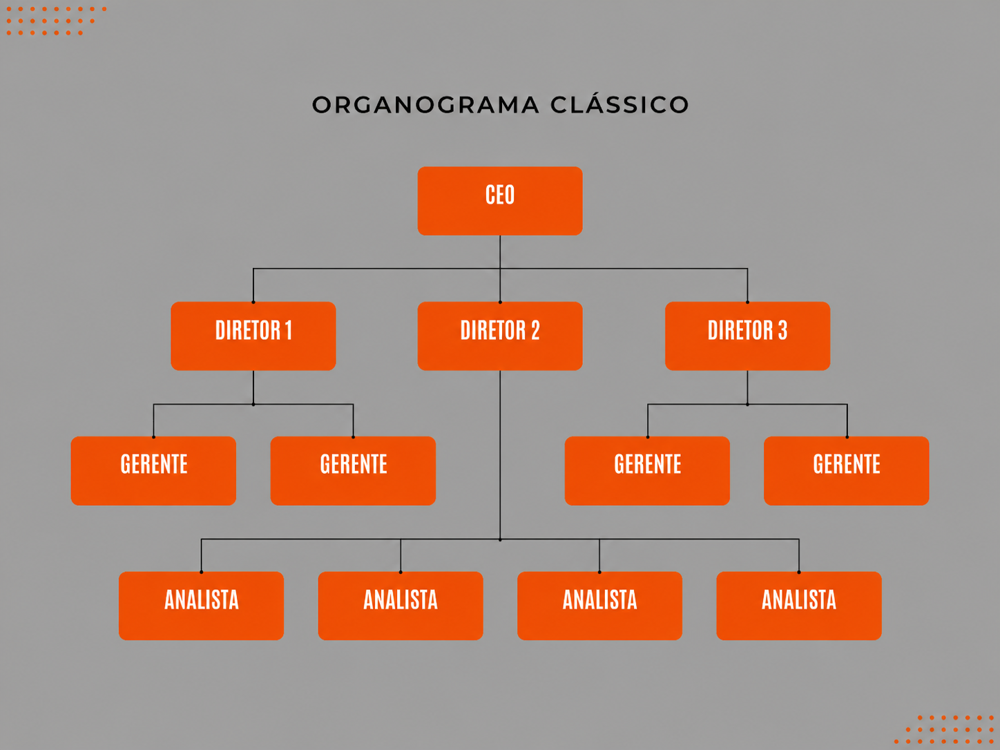

Duração da UC: 50 Horas
Formador: Luís Teixeira
No decorrer desta unidade curricular, fui capaz de aprender diversos aspetos acerca do tema da comunicação institucional. Aprendi que a comunicação não consiste somente na informação que se transmite, mas também na forma como é percebida e interpretada. A comunicação é a base da identidade da organização, apoiada pela estrutura, os fluxos de informação e os canais de comunicação e requer e promove uma melhoria contínua.
Uma das principais aprendizagens que fiz foram acerca da diferença entre missão, visão, valores e imagem. Fiquei a saber que todos estes aspetos influenciam na identidade da organização de formas diferentes. A missão é o propósito da organização, a visão é a aspiração futura, os valores são os princípios que guiam o comportamento e a imagem é a perceção que o público tem da organização.
Durante o desenvolvimento das atividades, senti algumas dificuldades em compreender certas matérias, principalmente na diferenciação dos diversos fluxos de comunicação e nas medidas corretivas e preventivas. mas consegui superar essas dificuldades através do projetos de trabalho feitos em aula com de exemplos práticos e da aplicação dos conhecimentos em exemplos que possam acontecer no local de trabalho.
Percebi que me tornei mais capaz de analisar os aspectos relativos à comunicação numa organização e compreender a sua importância no bom funcionamento dos serviços. Adquiri maior consciência da necessidade de transmitir a informação de forma organizada, clara e adequada. Ainda assim, acredito que deva continuar a desenvolver a capacidade de detetar problemas na comunicação e propor soluções eficazes.
Esta unidade curricular foi importante no meu crescimento pessoal e profissional. os conhecimentos adquiridos terão utilidade no futuro, pois a comunicação é fundamental em qualquer contexto de trabalho. Aprendi que a implementação de políticas de comunicação institucional não consiste somente na transmissão de informação, mas sim na sua correta compreensão, na cooperação e na qualidade e melhoria contínua da organização.

Aprendi também a importância da estrutura organizacional, das áreas funcionais e dos organogramas. aprendi, com as atividades realizadas, como construir, ler e interpretar um organograma, e isso permitiu-me compreender melhor a definição de funções, responsabilidades e hierarquia numa organização. Também percebi quanto é importante uma estrutura bem definida para que a informação possa circular e para que haja coordenação entre departamentos.
Entendi, por outro lado, a importância da comunicação interna e externa. Na comunicação interna, permite-se a troca de informação entre os colaboradores, isto ajuda a melhorar a organização do trabalho e a cooperação. já na comunicação externa, a organização consegue divulgar a sua imagem, relacionar-se com os clientes e criar uma boa reputação. Entendi também que a comunicação interna influencia a imagem transmitida ao exterior.
Aprendi que os canais de comunicação devem ser escolhidos de acordo com a mensagem, o público-alvo e o objetivo. também aprendi que existem barreiras à comunicação (como a incapacidade de transmitir a mensagem de forma clara, os mal-entendidos e a informação incompleta) que podem comprometer a comunicação. Tive a noção de que a linguagem clara e objetiva, a escuta ativa, o feedback e a verificação da correta compreensão são importantes para vencer estas dificuldades e que basta haver falha num destes componentes para que a comunicação seja afetada, pois por exemplo se todos os passos anteriores forem cumpridos corretamente mas depois não houver feedback adequado é uma falha na comunicação.
Na realização das atividades, tive consciência de que os princípios da comunicação organizacional, como a clareza, coerência, objetividade, etica, são muito importantes para que não ocorram erros e a informação seja transmitida adequadamente.
Aprendi que a comunicação institucional tem também ligação à qualidade, auditoria e melhoria contínua. Se em algum processo de comunicação ocorrer uma falha, não basta corrigi-la no momento. é necessário apurar as causas dessa falha, a fim de prevenir futuras ocorrências, no mesmo tema fiquei ciente da diferença entre as ações corretivas (que visam corrigir falhas encontradas) e as ações preventivas (que visam prevenir problemas potenciais).
Email: rafaelpereira20@outlook.pt
GitHub: VoidRafouz